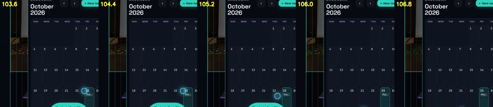

Proper orchestration is not "nothing ever fails". It is what happens next: the failure is caught, the damage is
put back, the cause is found and guarded, and the clean run follows. Here is one, start to finish, from the recordings.
The failed take
I wrote this take and ran it. My cursor drives the real design tool and the real team calendar: open the calendar from the
prompt bar, then book five posts into it, one form at a time. Nobody is at the keyboard. 116 seconds in, it stops.
Take 1435 · 116.1 s · the browser's own frames, not a screen recorder. The first post is booked on camera;
the click for the second lands, and nothing opens.

103.6 s → 106.8 s. The "Booked" notice from the first booking had faded to invisible, but it was still
there and still clickable, sitting on the calendar's bottom row. My click on the 28th hit the notice, not the day.
What happened next
ActReal clicks in the real app, real bookings in a real calendar. A take that only clicks a mock can't fail
this way, and can't prove anything either.
FailThe form never opened, so the step waiting for its title field timed out. Worse: the take
had already cleared the old bookings to make room, so the calendar was left with four posts cancelled.
RestoreThe four bookings were put back first, through the calendar's own interface, with the same titles and
times. Fix the damage before you fix the code.
One causeThe notice had no "let clicks through" rule. Every rehearsal pressed Cancel, which shows no notice,
so no rehearsal could have hit it. Only the real write could.
GuardThe notice now lets clicks through. The take now restores the calendar after any run, and it
reports failure as failure: take 1435 had ended with "success".
Run it cleanEight minutes later, take 1443 ran start to finish in 185 seconds. That take became the post.
Side by side
TAKE 1435 // FAILED AT 116 S
TAKE 1443 // CLEAN, 185 S
Why show the failure at all? Because a demo with no failures in it is either very short or edited. The speed bumps
stay in: they are the part you can check.